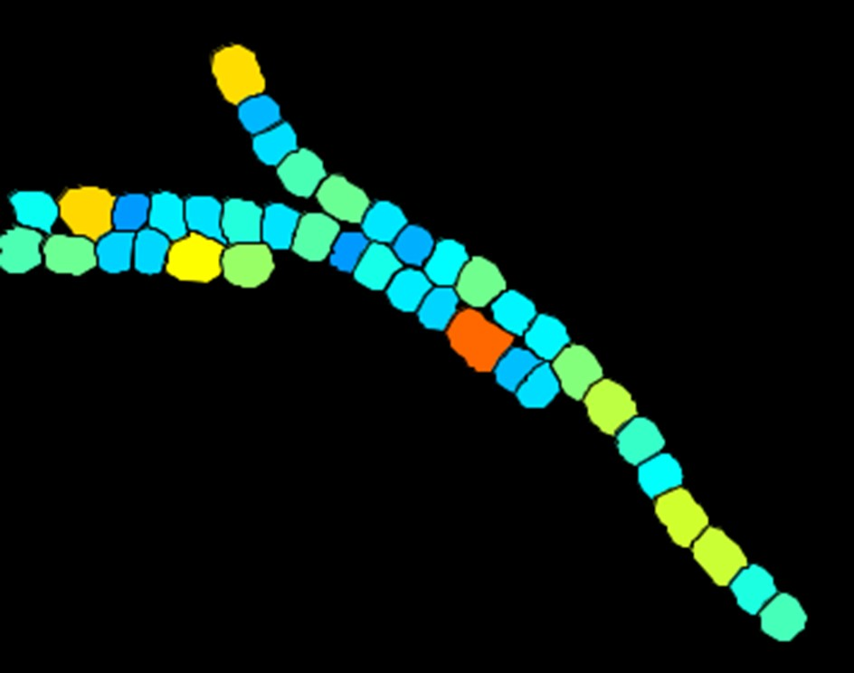

Cyanobacterial cell division
Automated segmentation, tracking, and quantitative analysis of cells and filaments to study growth and differentiation.
Read more ↗I’m Cesar Valades-Cruz, an associate researcher at the Institute of Hydrobiology, Chinese Academy of Sciences. I develop microscopy and AI-assisted bioimage analysis methods to understand how cells organize, move, and divide.


Research
My work connects optical imaging, computational methods, and cell biology across three complementary areas.
Automated segmentation, tracking, and quantitative analysis of cells and filaments to study growth and differentiation.
Read more ↗Measuring molecular orientation and nanoscale structure in actin networks and other biological assemblies.
Read more ↗Restoration, tracking, visualization, and data workflows for complex microscopy datasets.
Read more ↗
At the Institute of Hydrobiology
My current research studies how cyanobacterial cells grow and divide. Image analysis lets us follow individual cells within filaments and connect their behavior to larger biological patterns.
Explore this work ↗Announcements
Selected publications
About
My path has taken me from mechatronics in Mexico to biophotonics in France and Spain, then to cell imaging at Institut Curie and Inria. Today I work in Wuhan, China, with Prof. Cheng-Cai Zhang’s team.
I enjoy building tools that turn difficult microscopy data into useful biological measurements, and collaborating across disciplines to make those methods available to others.